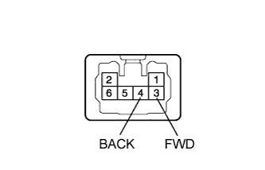

REAR POWER SEAT CONTROL SYSTEM > Reclining Motor Circuit |
| 1.INSPECT NO. 3 SEATBACK FRAME SUB-ASSEMBLY (RECLINING MOTOR) |
|  |
for LH Side:
Remove the No. 3 seatback frame sub-assembly LH (Click here).
Check if the No. 3 seatback frame moves smoothly when the battery is connected to the reclining motor connector terminals.
for RH Side:
Remove the No. 3 seatback frame sub-assembly RH (Click here).
Check if the No. 3 seatback frame moves smoothly when the battery is connected to the reclining motor connector terminals.
| Measurement Condition | Specified Condition |
| Battery positive (+) → 3 (FWD) Battery negative (-) → 4 (BACK) | Forward |
| Battery positive (+) → 4 (BACK) Battery negative (-) → 3 (FWD) | Backward |
| Result | Proceed to |
| OK (for LH Side) | A |
| OK (for RH Side) | B |
| NG (for LH Side) | C |
| NG (for RH Side) | D |
|
| ||||
|
| ||||
|
| ||||
| A | |
| 2.CHECK HARNESS AND CONNECTOR (FOLD SEAT CONTROL ECU - NO. 3 SEATBACK FRAME LH) |
Disconnect the d2 and d1 ECU connectors.
Disconnect the d3 No. 3 seatback frame connector.
Measure the resistance according to the value(s) in the table below.
| Tester Connection | Condition | Specified Condition |
| d1-37 (SV2) - d3-5 (HLV) | Always | Below 1 Ω |
| d1-37 (SV2) - Body ground | Always | 10 kΩ or higher |
| d1-19 (SRCL) - d3-2 (HLS) | Always | Below 1 Ω |
| d1-19 (SRCL) - Body ground | Always | 10 kΩ or higher |
| d1-24 (SG2) - d3-6 (HLG) | Always | Below 1 Ω |
| d1-24 (SG2) - Body ground | Always | 10 kΩ or higher |
| d2-1 (RCL+) - d3-3 (FWD) | Always | Below 1 Ω |
| d2-1 (RCL+) - Body ground | Always | 10 kΩ or higher |
| d2-5 (RCL-) - d3-4 (BACK) | Always | Below 1 Ω |
| d2-5 (RCL-) - Body ground | Always | 10 kΩ or higher |
|
| ||||
| OK | |
| 3.CHECK FOLD SEAT CONTROL ECU LH |
Remove the fold seat control ECU LH with its connectors still connected (Click here).
Measure the voltage according to the value(s) in the table below.
| Tester Connection | Condition | Specified Condition |
| d1-37 (SV2) - d1-24 (SG2) | Engine switch off | Below 1 V |
| Engine switch on (IG) | 5.5 to 8 V | |
| d1-19 (SRCL) - d1-24 (SG2) | Motor is operating | Pulse generation |
| d2-1 (RCL+) - Body ground | Rear power seat switch LH forward | 11 to 14 V |
| d2-5 (RCL-) - Body ground | Rear power seat switch LH backward | 11 to 14 V |
| *a | Component with harness connected (Fold Seat Control ECU LH) |
|
| ||||
| OK | ||
| ||
| 4.CHECK HARNESS AND CONNECTOR (FOLD SEAT CONTROL ECU - NO. 3 SEATBACK FRAME RH) |
Disconnect the c2 and c1 ECU connectors.
Disconnect the c3 No. 3 seatback frame connector.
Measure the resistance according to the value(s) in the table below.
| Tester Connection | Condition | Specified Condition |
| c1-37 (SV2) - c3-5 (HLV) | Always | Below 1 Ω |
| c1-37 (SV2) - Body ground | Always | 10 kΩ or higher |
| c1-19 (SRCL) - c3-2 (HLS) | Always | Below 1 Ω |
| c1-19 (SRCL) - Body ground | Always | 10 kΩ or higher |
| c1-24 (SG2) - c3-6 (HLG) | Always | Below 1 Ω |
| c1-24 (SG2) - Body ground | Always | 10 kΩ or higher |
| c2-1 (RCL+) - c3-3 (FWD) | Always | Below 1 Ω |
| c2-1 (RCL+) - Body ground | Always | 10 kΩ or higher |
| c2-5 (RCL-) - c3-4 (BACK) | Always | Below 1 Ω |
| c2-5 (RCL-) - Body ground | Always | 10 kΩ or higher |
|
| ||||
| OK | |
| 5.CHECK FOLD SEAT CONTROL ECU RH |
Remove the fold seat control ECU RH with its connectors still connected (Click here).
Measure the voltage according to the value(s) in the table below.
| Tester Connection | Condition | Specified Condition |
| c1-37 (SV2) - c1-24 (SG2) | Engine switch off | Below 1 V |
| Engine switch on (IG) | 5.5 to 8 V | |
| c1-19 (SRCL) - c1-24 (SG2) | Motor is operating | Pulse generation |
| c2-1 (RCL+) - Body ground | Rear power seat switch RH forward | 11 to 14 V |
| c2-5 (RCL-) - Body ground | Rear power seat switch RH backward | 11 to 14 V |
| *a | Component with harness connected (Fold Seat Control ECU RH) |
|
| ||||
| OK | ||
| ||